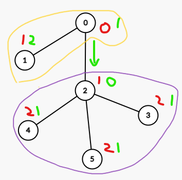
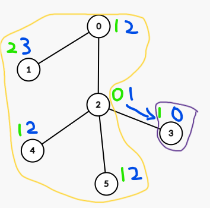
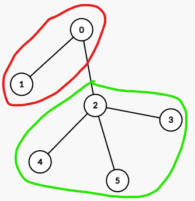
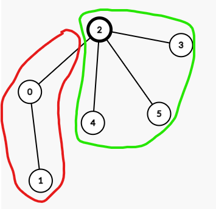
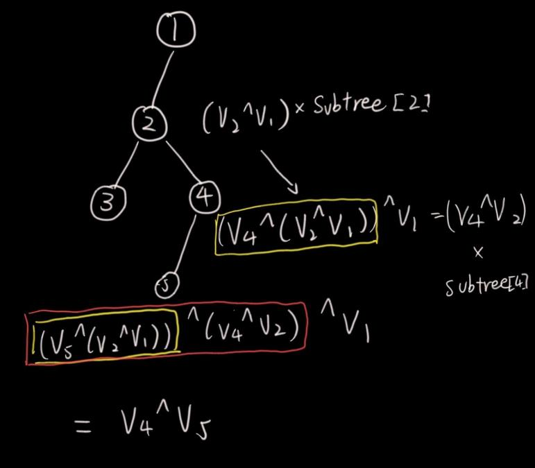

Last CF contest, I solved A~C really quickly, but got stuck for over an hour on a rerooting dp problem. In this blog, I want to learn how to do reroot dp!
When to reroot dp?
(Disclaimer: I will refer u as the parent node, and v,c as the child node)
Reroot DP occurs when the problem wants a answer that would require making each node as the root of the tree.
You should be able to calculate one of the answers in maybe O(n) time, and is able to transition subtree/outside subtree informations in less than the time to construct them individually with the help of some information gathered during the calculation of the first answer (subtree information, depth…etc).
Lets check out a basic problem to understand reroot dp more:
The problem is basically: For every node i, return the sum of depth if i is the root of the tree.
The first step for reroot dp problems is to first determine the answer of a root, lets try to find the answer for node 0.
This is quite trivial, we denote sum[u] as the depth sum of subtree u, we can maintain depth[v]=depth[u]+1 with depth[0]=0, and sum[u]=depth[u]+∑sum[v] with a simple dfs like this:
But when thinking of how to build the answer for the first problem, you also want to start thinking about what information that you need in the rerooting process that can be maintained in the first dfs.
In this problem, we can start thinking of the transition process, then we can know what we want to track in first dfs.

The numbers labeled in red is the depth when 0 is the root, and green is when 2 is the root. Notice the nodes inside the yellow circle (nodes that aren’t in the subtree of 2) all increased 1 depth, while the nodes inside the purple circle (nodes that are in the subtree of 2) all decreased 1 depth.

Another example is from 2 to 3, where green is the depth when 2 is the root, and blue is 3. You can also see the same transition. we can thus determine the dp transition between nodes:
Denote dp[i] as the answer with i as the root, then
This problem is much less trivial than the first one I would say, but lets think about how to get the answer for an initial root.
We can let dp1[i] denote the number of ways to color the subtree satisfying the condition plus no color on everything. The reason we want to include no coloring is to make the dp1 transition much easier, as we can notice that dp1[u]=1+∏dp1[v] with dp[leaf]=2 (color it or not).
We can obtain the answer for root is dp1[root]−1 (removing the one where nothing is colored).
Now, lets think of the transition in our second dfs:
Denote dp2[i] as the number of ways to color the tree after removing is subtree. This may seem pretty sudden, but it makes sense if you fully understood reroot dp (which I didn’t so I struggled on this question for a long time)
In a reroot dp problem, you can treat the whole tree as two components: the subtree of a node i, and other parts of the tree. Since when you make i the root instead, all the parts that didn’t belong to the subtree will then be inside the subtree (with the original parent node as its child), so if we can maintain the value for this newly added part, we can calculate the answer similar to how we got the first root (as we would have the values for all is child).
dp2[v] here basically means the dp1 we had, but for node u when v is the root instead.
In the picture, the red circle is dp2[2], and the green circle is dp1[2].


In this problem, the answer for node u is obviously just (∑dp1[v]⋅dp2[u])=(dp1[u]−1)⋅dp2[u]
(try to relating it to how we got the answer for root 1, really helps understanding the concept!)
Now, dp2[root]=1, how about others?
dp2[2] is cricled in red, and dp2[3] is circled in green. We can see that dp[3] added the nodes that were in the subtree before, but not in the current subtree, which is all the siblings of 3. We can write out the transision as:
(I again, want you to try relating this transition to what we did with dp1)
Which unfortunately, the first one would TLE, and we cannot do the second one because of modular division (and m isn’t guaranteed to be prime so it’s hard to find inverse).
Fontunately, we can calculate ∑c,c=vdp1[c] by making prefix/suffix products, this way we can avoid the troublesome division, yay! (and we can also calculate it during the first dfs, which is pretty nice!)
intmabs(int a, int mod){ return (a % mod + mod) % mod; } intmmul(int a, int b, int mod){ returnmabs((a % mod) * (b % mod), mod); } intmadd(int a, int b, int mod){ // a + b returnmabs(a % mod + b % mod, mod); } intmmin(int a, int b, int mod){ // a - b returnmabs(a % mod - b % mod, mod); } intfastpow(int a, int n, int mod){ // calculate a^n % mod if(n == 0) return1; int half = fastpow(a, n >> 1, mod); if(n & 1) returnmmul(mmul(half, half, mod), a, mod); elsereturnmmul(half, half, mod); } intmdiv(int a, int b, int mod){ // (a / b) % mod returnmmul(a, fastpow(b,mod - 2, mod), mod); } voidsolve(){ int n, m; cin >> n >> m; vector<int> graph[n + 1]; for(int i = 0; i < n - 1; i++) { int x, y; cin >> x >> y; graph[x].pb(y); graph[y].pb(x); } vector<int> dp1(n + 1, 1); vector<int> prefix[n + 1]; vector<int> suffix[n + 1]; function<void(int, int)> dfs1 = [&](int u, int p) { if(graph[u].size() == 1 && graph[u][0] == p) { // leaf dp1[u] = 2; return; } prefix[u].pb(1); suffix[u].pb(1); for(auto v : graph[u]) { if(v != p) { dfs1(v, u); dp1[u] = mmul(dp1[u], dp1[v], m); prefix[u].pb(dp1[u]); } } int tmp = 1; for(int i = graph[u].size() - 1; i >= 0; i--) { int v = graph[u][i]; if(v != p) { tmp = mmul(tmp, dp1[v], m); suffix[u].pb(tmp); } } prefix[u].pb(1); suffix[u].pb(1); reverse(all(suffix[u])); dp1[u] += 1; }; dfs1(1, -1); vector<int> dp2(n + 1, 0); dp2[1] = 1; function<void(int, int)> dfs2 = [&](int u, int p) { bool flg = 0; for(int i = 1; i <= graph[u].size(); i ++) { int v = graph[u][i - 1]; if(v != p) { dp2[v] = madd(mmul(dp2[u], mmul(prefix[u][i - 1 - flg], suffix[u][i + 1 - flg], m), m), 1, m); // dp2[v] = (dp2[u] * \sum dp1[c] (c is u's child && c != v)) + 1 dfs2(v, u); } else flg = 1; } }; dfs2(1, -1); for(int i = 1; i <= n; i++) cout << mmul((dp1[i] - 1), dp2[i], m) << endl; return; }
Time Complexity: O(n)
Note: you can also write the first leetcode problem similar to this one too, let dp2[u] be the sum outside of the subtree u, and dp as the sum of subtree u, both with u as root. It’s uglier because you need to update dp too here because it changes, but I think writing it like this can make the steps of reroot dp clearer.
1 2 3 4 5 6 7 8 9 10 11 12 13 14 15 16
// the same as before dfs1(0, -1); vector<int> dp2(n, 0); function<void(int, int)> dfs2 = [&](int u, int p) { for(auto v : graph[u]) { if(v != p) { dp[v] -= depth[v] * subtree[v]; dp2[v] = dp2[u] + (dp[u] - dp[v] + (n - (2 * subtree[v]))); dfs2(v, u); } } }; dfs2(0, -1); vector<int> ans; for(int i = 0; i < n; i++) ans.push_back(dp[i] + dp2[i]); return ans;
Now, let’s actually solve the problem I was stuck in contest.
Let’s first think about how to obtain the answer for the root.
From our root, we can greedily change every child v into the value our root has with (val[u]⊕val[v])⊕subtree[v].
We also need to remember that the nodes after the child c also changed to (val[u]⊕val[v])⊕val[c] when calculating.
Let’s denote the value that we want to apply to the subtree[u] as xor_val[u], which xor_val[root] is 0.
calulating xor_val during dfs is quite easy: xor_val[v]=(xor_val[u]⊕val[v])⊕val[1].
But there is acutally a pretty nice observation here:

The part circled in yellow is the original value after the operation on node 2, and the red part is the value after node 4.
The value of every xor_val[v] is just val[u]⊕val[v]!
This tells us the value to apply does not change with the root, which makes our lives much easier.
So, the first part of dfs should look like this:
(xor_val[i]⋅subtree[i]) does not change with the root. The only changing ones are the current root (u), and the next child (v).
u will become the child of v, so xor_val[u]=val[v]⊕val[u]=xor_val[v], and the subtree size is just n−subtree[v].
For v, (xor_val[v]⋅subtree[v]) is just 0 since it’s the new root.
Combine them together, we have the following transition: